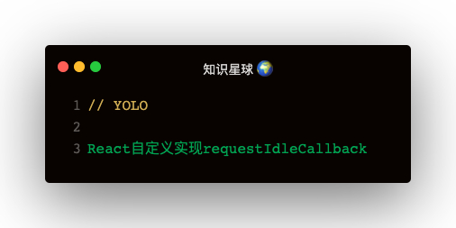

为什么React放弃使用原生requestIdleCallback?
了解几个名称：
FPS：frame per second，每秒的帧数
帧的几个问题
- setTimeout(callback) 和 setInterval(callback)
实现原理
react使用requestAnimationFrame + MessageChannel 实现requestIdleCallback的polyfill版本：
let frameDeadline
let activeFrameTime = 16
let channel = new MessageChannel()
let port = channel.port2
channel.port1.onmessage = () => {
const currentTime = performance.now()
console.log('当前时间:', currentTime)
console.log('当前帧剩余时间:', frameDeadline - currentTime)
}
const startTime = performance.now()
const requestAnimationFrameCircle = () => {
requestAnimationFrame(timestamp => {
frameDeadline = timestamp + activeFrameTime
port.postMessage(undefined)
if (performance.now() - startTime < 1000) {
requestAnimationFrameCircle()
}
})
}
requestAnimationFrameCircle()